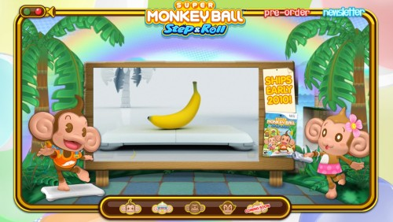

🏠 首頁
📁 SEGA 遊戲討論區
Super Monkey Ball Step & Roll 西方官網上線
👤 binyi
🕐 2009-09-24 09:10:22
Super Monkey Ball Step & Roll的西方官網上線囉！跟日本官網相較之下，各頁面顯得更加動態，可一邊瀏覽資訊和玩玩猴子們。
http://www.supermonkeyballstepandroll.com/

附件: monkey.jpg
發現最後一欄未公開的連結是\"小遊戲\" (流口水)
－－－
相關資訊:
[日本官網]